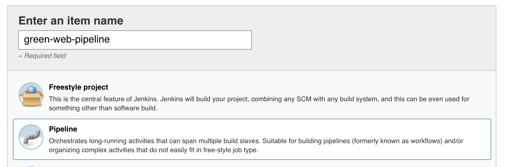
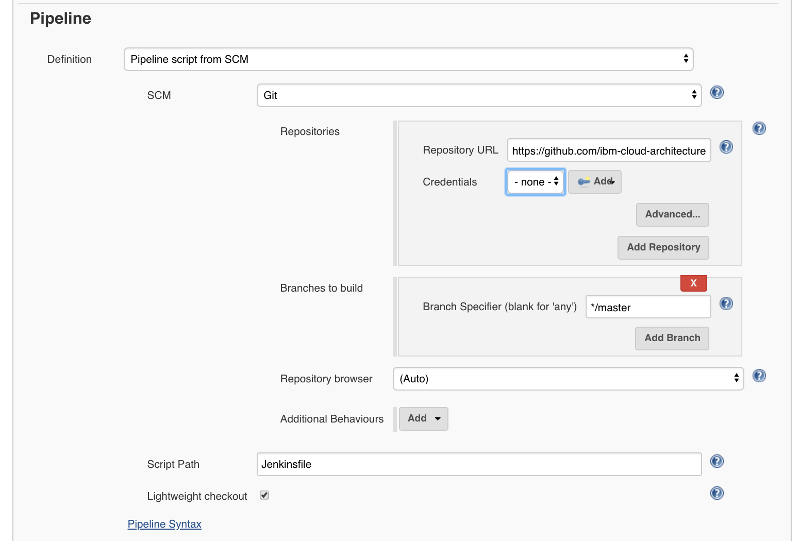

Run the different components of the solution
This section addresses how to run all the components of the solution. It is not a tutorial and you need to have hands on experience on IBM Cloud Private and IBM Cloud. You also need access to Virtual Machines to be able to run the solution.
Pre-Requisites
Server environment
If you work for IBM, please contact us so you can access our labs via VPN.
If you want to setup the environment on your own you will need 4 computers/ VMs:
an ICP cluster with at the bare minimum of 3 VMs: one master node, one proxy and one worker node. This is for the run time. For the analytics part, using DSX, you can use the IBM Cloud service or use the DSX developer chart from the ICP catalog, and use your ICP instance.
One VM for DB2 community edition, Liberty
In the close future we plan to deliver a Vagrant file to get a unique virtual environment with DB2 dev, Liberty, and you can use this vagrant file for ICP.
In production you will use a dedicated cluster with DSX local deployed on it. This is out environment as explained in this note
For the Web App built using nodejs and expressjs
- For this application you need to have nodejs installed on your computer with the npm installer tool.
- Clone this current repository, or if you want to work on the code, fork it in your own github repository and then clone your forked repository on your local computer. If you used the
fork-repos.shscript from the Data & Analytics reference implementation solution main repository, you are already set.
git clone https://github.com/ibm-cloud-architecture/refarch-cognitive-analytics
cd refarch-cognitive-analytics/src
npm install
- You need to install Angular 4 command line interface if you do not have it yet: see the cli.angular.io website with the following command
sudo npm install -g @angular/cli
on Mac, as a global install you need to be root user or a "sudoer" user.
* If you want to tune the server code, you need to install nodemon to support server code change without stopping the server. The installation is done with npm:
sudo npm install -g nodemon
For Watson Conversation service
Create the service in IBM Cloud and get the credentials, update the configuration file (config.json and values.yaml) for the webapp to access the conversation service. See this note about implementation
For Tone analyzer
Create the service in IBM Cloud and get the credentials. See also this note for more details.
Build
For the Web App
To build the angular 4 components run the commands under the src folder:
$ ng build
or
$ npm run build
When involving a continuous integration using Jenkins, the jenkins file executes the script in the good order:
stage('build') {
steps {
sh 'build.sh'
}
}
When compiling the angular typescripts the javascript code generated is saved under dist folder. It will be packaged when a docker image is built.
We have added a build.sh shell script which uses a version number (0.0.6) to build the docker image with good tagging and modify the helm chart with the good tag reference.
Jenkins pipeline
We deployed a Jenkins server on IBM Cloud Private following the instructions described here, with a PVC named jenkins-home under the greencompute namespace and the commands:
$ helm install --name greenjenkins --set Persistence.ExistingClaim=jenkins-home --set Master.ImageTag=2.67 stable/jenkins --namespace greencompute
$ cd chart/jenkins
$ kubectl create -f docker-reg-configMap.yaml --namespace greencompute
$ kubectl create -f registry-secret.yaml --namespace greencompute
Then we added configMap and secret in kubernetes cluster to keep docker private registry information so that build job can publish docker images to the registry automatically.
The webapp and customer service projects have jenkinsfile that can be used in a Jenkins Pipeline. Pipelines are made up of multiple steps that allow you to build, test and deploy applications.

Then define the URL of the github repository and specify the branch to checkout.
 The pipeline is created. You can manually start the build job that runs the pipeline. The job pulls the code from Git repository's master branch and runs the Jenkins file. Then, it builds the Docker image and pushes it to the IBM Cloud Private Docker registry.
Run
Run the web application locally
To start the application using node monitoring tool use the command:
npm run dev
To run in non-development mode
npm start
The trace should display a message like below with the url to use
[1] starting `node server/server server/server`
[1] Server v0.0.1 starting on http://localhost:3001
Point your web browser to the url: http://localhost:3001 to get access to the user interface of the home page.
The demonstration script is described in this note
Run web app on IBM Cloud Private
The application can be deployed with helm install. Once the docker image is built, you need to remote connect to the master node where the docker private repository resides, and push the image to the repo:
$ docker build -t ibmcase/greenapp .
$ docker tag ibmcase/greenapp greencluster.icp:8500/greencompute/greenapp:v0.0.1
$ docker login greencluster.icp:8500
$ docker push greencluster.icp:8500/greencompute/greenapp:v0.0.1
Deploy the release using the helm
First you need to rename the file values-tmpl.yaml to values.yaml and set the parameters as the config.json. We are using the mechanism of config map to externalize the configuration as defined by the config.json. While using cloud foundry or pure local nodejs deployment this file is read from the filesystem by the server.js. But with kubernetes pods the best practice is to export this configuration into ConfigMap.
To do so we need to create a new template: templates/configmap.yaml. This file uses the same structure as the config.json file:
apiVersion: v1
kind: ConfigMap
metadata:
name: {{ template "fullname" . }}
labels:
chart: "{{ .Chart.Name }}-{{ .Chart.Version | replace "+" "_" }}"
data:
config.json: |+
{
"conversation" :{
"version" : "{{ .Values.config.conversation.version }}",
"versionDate":"{{ .Values.config.conversation.versionDate }}",
"username":"{{ .Values.config.conversation.username }}",
"password":"{{ .Values.config.conversation.password }}",
"conversationId":"{{ .Values.config.conversation.conversationId }}",
"workspace":"{{ .Values.config.conversation.workspace }}",
"usePersistence": "{{ .Values.config.conversation.usePersistence }}"
},
"customerAPI":{
"url":"{{ .Values.config.customerAPI.url }}",
"host":"{{ .Values.config.customerAPI.host }}",
"xibmclientid": "{{ .Values.config.customerAPI.xibmclientid }}"
},
"toneAnalyzer":{
"url": "{{ .Values.config.toneAnalyzer.url }}",
"versionDate": "{{ .Values.config.toneAnalyzer.versionDate }}",
"username": "{{ .Values.config.toneAnalyzer.username }}",
"password": "{{ .Values.config.toneAnalyzer.password }}"
},
"scoringService":{
"type": "{{ .Values.config.scoringService.type }}",
"baseUrl": "{{ .Values.config.scoringService.baseUrl }}",
"instance": "{{ .Values.config.scoringService.instance }}",
"username": "{{ .Values.config.scoringService.username }}",
"password": "{{ .Values.config.scoringService.password }}"
},
"dbCredentials" : {
"url": "{{ .Values.config.dbCredentials.url }}"
},
"debug": "{{ .Values.config.debug }}",
"port": "{{ .Values.config.port }}",
"version": "{{ .Values.config.version }}"
}
As you can see the real values are set in the values.yaml file. This is an implementation decision to externalize all values in this file, we could have set the value directly in the template as they are not used anywhere else.
Modify deployment.yaml
To 'inject' the configuration from the configMap to the server nodejs app, the trick is to specify that the config.json file is coming from a logical volume:
In the deployment.yaml we add a volumeMount point to the container specification:
spec:
containers:
- name: {{ .Chart.Name }}
image: "{{ .Values.image.repository }}:{{ .Values.image.tag }}"
imagePullPolicy: {{ .Values.image.pullPolicy }}
ports:
- containerPort: {{ .Values.service.internalPort }}
volumeMounts:
- name: config
mountPath: /greenapp/server/config/config.json
subPath: config.json
the path /greenapp comes from the dockerfile, working directory declaration:
COPY . /greenapp
WORKDIR /greenapp
so the mountPath will overwrite the config.json file.
The volume name (config) is arbitrary but needs to match a volume declared later in the deployment.yaml.
volumes:
- name: config
configMap:
name: {{ template "fullname" . }}
One volume, named config uses the configMap named using the template name of the helm package and match the configMap we defined above.
Deploy the chart as a new release
$ cd ../chart
$ helm install green-customerapp/ --name green-customerapp --namespace greencompute
Assess deployment is successful:
$ kubectl logs <pod name> --namespace greencompute
Once deployed and started the Web application can be seen at the URL: http://greenapp.green.case
Run the Jupyter notebook
The main root project for green compute includes a dockerfile to get all the interesting components you may want to run to execute and develop Jupyter notebooks on your own. If you use docker build -t pysparktf ., you should get the image with python, sklearn, all spark python modules and even Tensorflow.
REPOSITORY TAG IMAGE ID CREATED SIZE
pysparktf latest ee5d45e40097 2 months ago 5.29G
pyspark latest 06821066e790 3 months ago 5.01GB
jupyter/pyspark-notebook latest f4f7de14d4a7 3 months ago 4.56GB
From those docker images you can run a container that mounts your local folder where you have notebook under the work folder. The script ./startLocalJupyter.sh, and then run the kernel.